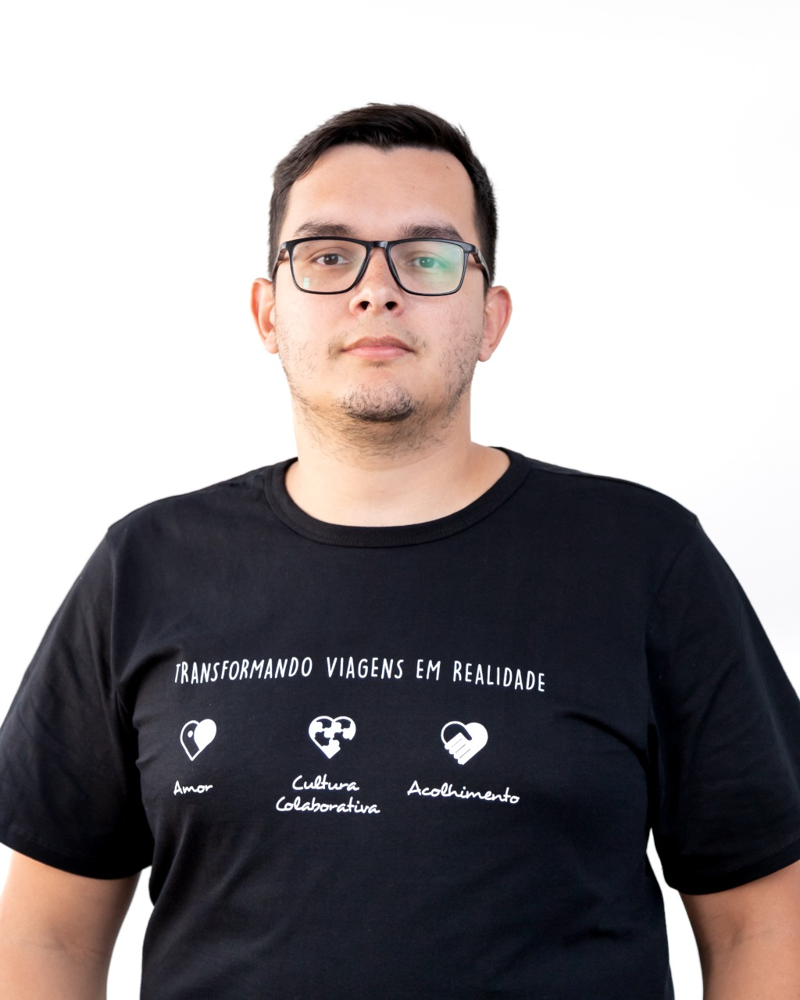

Olá! Sou Alisson Fernandes QA
Especialista em Garantia de Qualidade (QA) com ampla experiência em assegurar a qualidade de software em todas as fases do desenvolvimento. Tenho forte comprometimento com a identificação e resolução de problemas, garantindo a entrega de produtos de alta qualidade. Minha paixão reside em desenvolver estratégias e implementar práticas que elevem a eficácia dos processos de QA, resultando em soluções confiáveis que atendem às expectativas dos usuários e superam desafios reais.
Saiba Mais!
